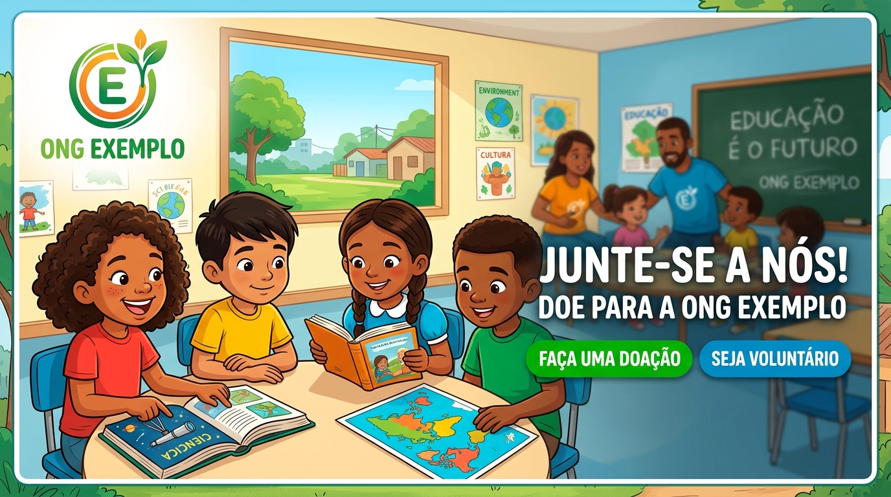

Oficinas Educativas

Aulas de reforço escolar, informática e arte para jovens da comunidade.
Conheça nossas frentes de atuação e descubra como você pode transformar realidades.

Aulas de reforço escolar, informática e arte para jovens da comunidade.
O trabalho voluntário é o coração da nossa organização. Para se juntar a nós, siga os passos abaixo:
Sua contribuição financeira garante a continuidade dos nossos projetos: